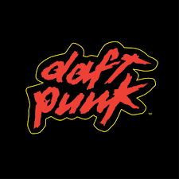

Daft Punk were a French electronic music duo formed in 1993 in Paris by Thomas Bangalter and Guy-Manuel de Homem-Christo. They achieved early popularity in the late 1990s as part of the French house movement, combining elements of house music with funk, disco, techno, rock and synth-pop.The duo garnered further acclaim and commercial success and are now regarded as one of the most influential acts in dance music history.
Daft Punk's studio albums chart an impressive evolution in electronic music, each showcasing their innovative spirit and genre-blending prowess. Starting with "Homework" in 1997, they introduced a raw and infectious house sound that captivated club scenes worldwide, with iconic tracks like "Da Funk" and "Around the World." Their 2001 release, "Discovery," shifted to a more polished, melodic style, merging disco, rock, and pop elements, producing timeless hits such as "One More Time" and "Harder, Better, Faster, Stronger." "Human After All" in 2005 presented a more minimalist and repetitive approach, initially polarizing but later appreciated for its bold, mechanical feel, with standout tracks like "Robot Rock" and "Technologic." Their final album, "Random Access Memories" in 2013, marked a dramatic shift towards live instrumentation and collaborative efforts, earning critical acclaim and Grammy Awards with hits like "Get Lucky" and "Instant Crush." Each album not only defines a unique era in Daft Punk's career but also reflects their enduring impact on the electronic music landscape.
